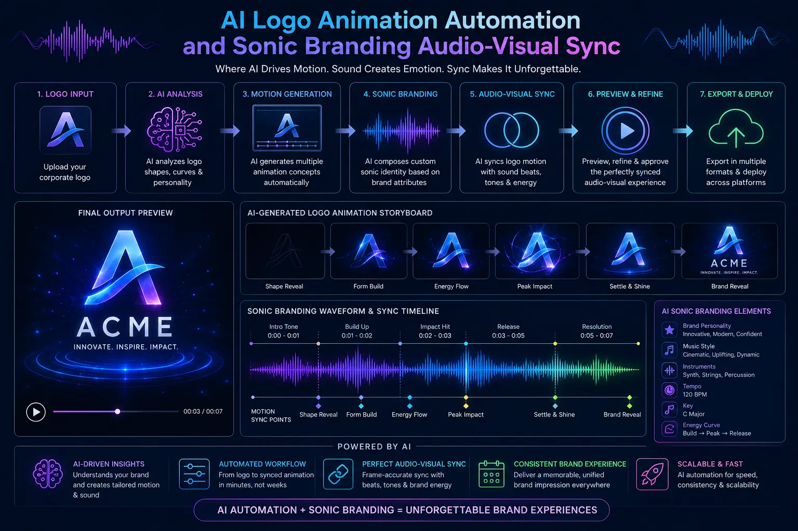
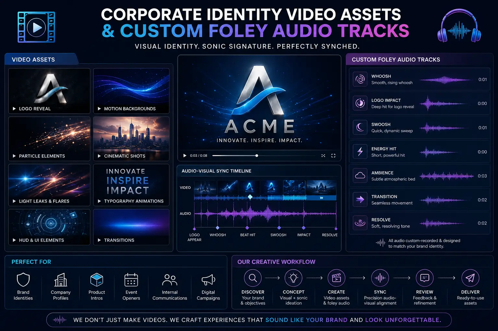

Using AI Animation Models to Sync Corporate Logo Motion with Custom Sonic Branding
The Importance of Cohesive Brand Introductions
In high-end Brand Promotion Videos, the first few seconds determine whether a viewer remains engaged. A clean, memorable brand introduction is critical. Historically, creating a dynamic logo reveal required manual animation workflows, with artists syncing visual transformations frame-by-frame to a custom audio track. While this traditional method offers precision, it takes significant time and resources to execute.
Modern AI tools streamline this process. By integrating AI Logo Animation Automation models, production teams can map logo components directly to audio waveforms. The AI coordinates motion parameters based on frequency peaks and transients, delivering a seamless Sonic Branding Audio-Visual Sync in minutes.
By utilizing these smart workflows, brands can build consistent Corporate identity video assets. This programmatic approach ensures that every introduction film, commercial, and promotional video ends with a high-impact, synchronized logo reveal that reinforces brand recognition.
How Audio-Driven Animation Works
Building a synchronized logo reveal involves mapping visual transitions to the peaks and frequencies of a brand's custom audio track:
- Audio Waveform Analysis. The AI analyzes the sonic logo track, extracting frequency bands, beats, and transient points.
- Keyframe Automation. The system translates these audio markers into visual keyframes, linking movement speed, rotation, and lighting changes to the music's volume peaks.
- Adding Sound Accents. Editors layer custom foley audio tracks (such as metallic swooshes, clicks, and sweeps) to match individual logo movements.
- Generating Bumper Variations. Creative teams produce dynamic logo bumpers in multiple formats (vertical, horizontal, and square) to fit different promotional placements.
Stronger Brand Impact
Synchronizing the visual logo reveal with the brand's sonic identity creates a professional impression that helps viewers remember the brand.
Consistent Assets
Applying automated workflows ensures that your logo behaves consistently across all Corporate identity video assets, maintaining brand uniformity.
Fast Bumper Generation
Using AI Logo Animation Automation reduces animation timelines, allowing studios to deliver custom reveals quickly.
Refined Audio Details
Layering custom foley audio tracks brings realistic texture to the animation, matching the visual motion with satisfying sound details.

Optimizing Logo Bumpers for Multiple Channels
Designing a high-performance brand introduction requires following clean layout and delivery parameters across channels:
- Keep it under 3 seconds. Modern online viewers expect quick intros. A logo reveal should be fast, transition quickly, and lead directly into the video content.
- Use clean backdrops. Keep the background simple to highlight the logo. Utilize neutral gray, deep blue, or solid black to keep the focus on the brand asset.
- Ensure mobile legibility. Ensure that fine text elements (such as taglines or URLs) remain legible on small mobile screens.
AI Animation Software
- Adobe After Effects with waveform automation expressions.
- Custom Stable Diffusion models for texture transitions.
- Luma Dream Machine for dynamic 3D reveals.
- Audio-driven keyframe generator scripts.
Production Checklist
- Import the vector logo asset (SVG or AI format).
- Analyze the sonic branding audio track.
- Map animation keyframes to transient markers.
- Layer custom Foley sound effects.
Key Visual Deliverables
- Horizontal 16:9 high-impact animation video bumpers.
- Vertical 9:16 logo reveals for social feeds.
- Alpha-channel transparent MP4 overlays.
- Archival project files for future localizations.

Conclusion
Automating logo animation with AI tools helps brands build synchronized introductions efficiently. By leveraging AI Logo Animation Automation and a strict Sonic Branding Audio-Visual Sync pipeline, production studios can deliver consistent brand reveals across campaigns. Adding custom sound layers via custom foley audio tracks brings a professional polish to these assets, helping you stand out in competitive digital feeds.
At The PhD Ads, we design synchronized visual and audio identities for commercial campaigns. Our production team matches Corporate identity video assets with custom sonic branding themes, building high-quality intros for professional company introduction films and digital advertising visuals.
Key Topics
Unify Your Visual and Auditory Branding
At The PhD Ads, we use AI-driven animation models and custom Foley sound design to sync your corporate logo reveal with your sonic branding, delivering premium company intros.
Email: team@e2o.in